Carro-chefe
Laranja Bahia
“O sol da Bahia em cada gole”
Laranja bahia com um toque de tangerina, colhida por pequenos produtores do Recôncavo Baiano.
R$ 9,90 · lata 350 ml
Refrigerantes artesanais
Refrigerantes artesanais com frutas brasileiras de verdade, até 40% menos açúcar e nenhum ingrediente que você não sabe pronunciar.

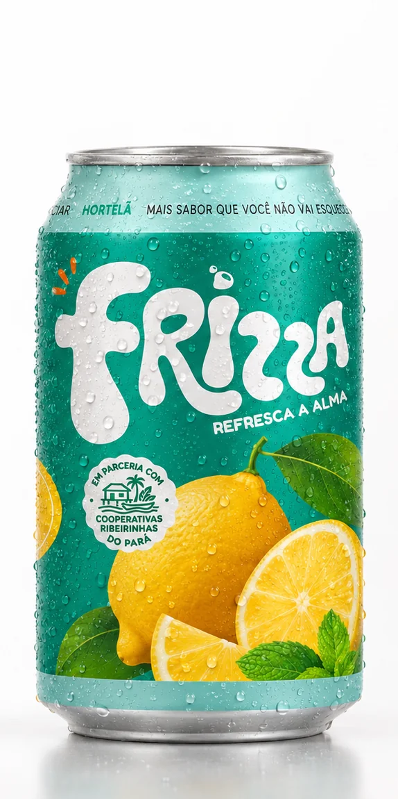
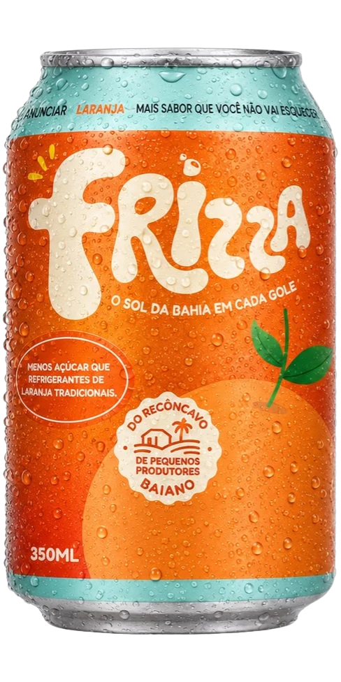


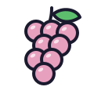
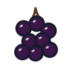
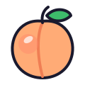
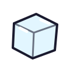
100% natural · 40% menos açúcar · Feito no Brasil · Sem conservantes · Frutas de pequenos produtores · Garrafa retornável · Zero corante artificial
A FRIZZA nasceu do sonho de criar um refrigerante que representa o sabor brasileiro e valoriza o pequeno produtor. Natural de verdade. Gostoso de verdade. Simples assim.
Nossos sabores
Carro-chefe
“O sol da Bahia em cada gole”
Laranja bahia com um toque de tangerina, colhida por pequenos produtores do Recôncavo Baiano.
R$ 9,90 · lata 350 ml
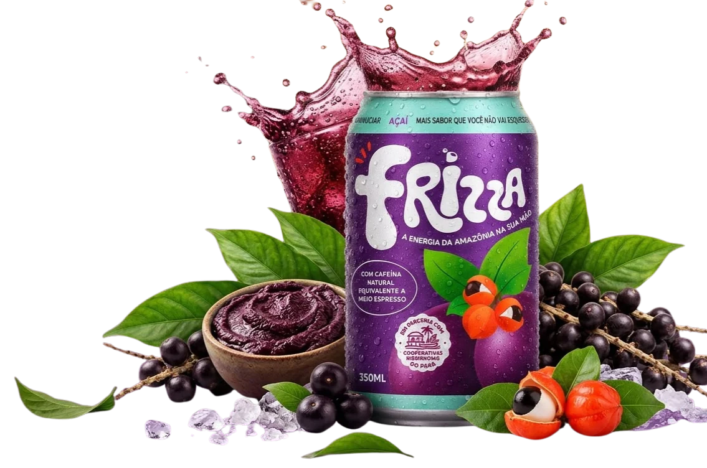
Energia natural
“A energia da Amazônia na sua mão”
Dois superalimentos amazônicos na mesma lata: polpa de açaí e extrato natural de guaraná, com cafeína natural equivalente a meio espresso.
R$ 10,90 · lata 350 ml
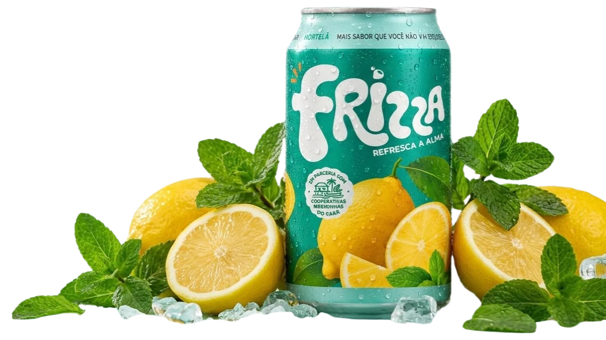
O mais leve
“Refresca a alma”
Limão siciliano com hortelã fresca da nossa horta em Gramado.
R$ 9,90 · lata 350 ml

Gourmet
“Doçura com atitude”
Pêssego maduro com gengibre in natura.
R$ 10,90 · lata 350 ml
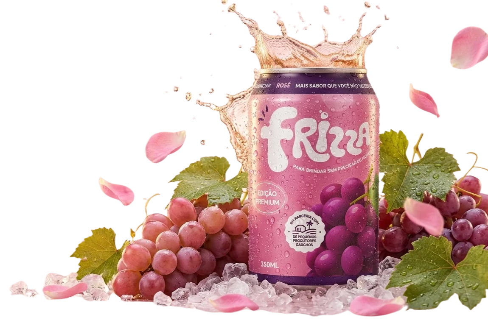
Edição Especial
“Para brindar sem precisar de motivo”
Uva rosé orgânica dos vinhedos de Bento Gonçalves com um sopro de água de rosas.
R$ 13,90 · lata 350 ml
Comunidade
Gente de verdade, momentos de verdade. Olha quem já está borbulhando com a gente.
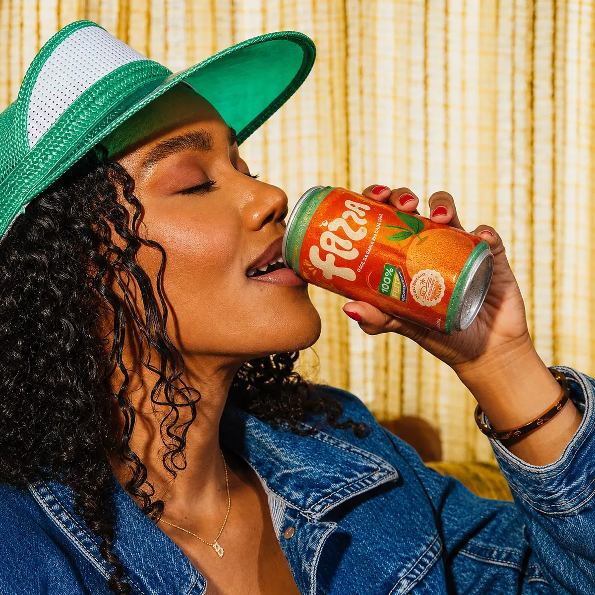
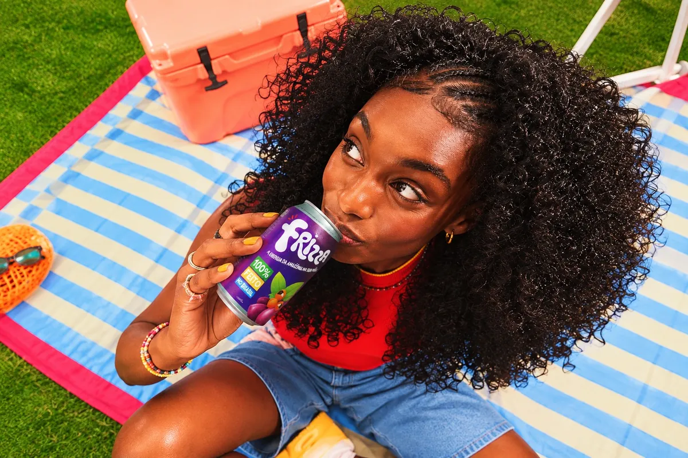
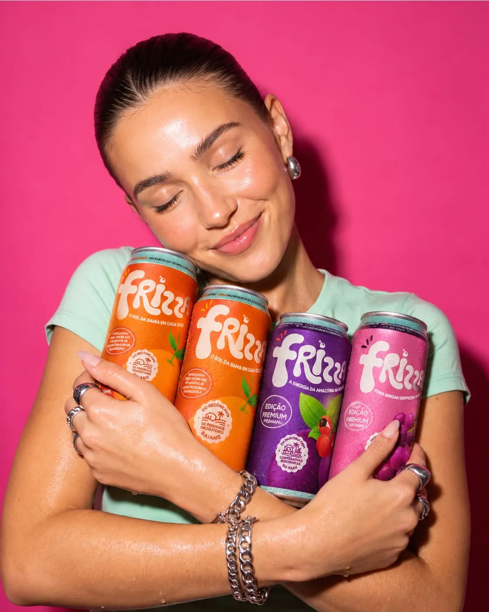
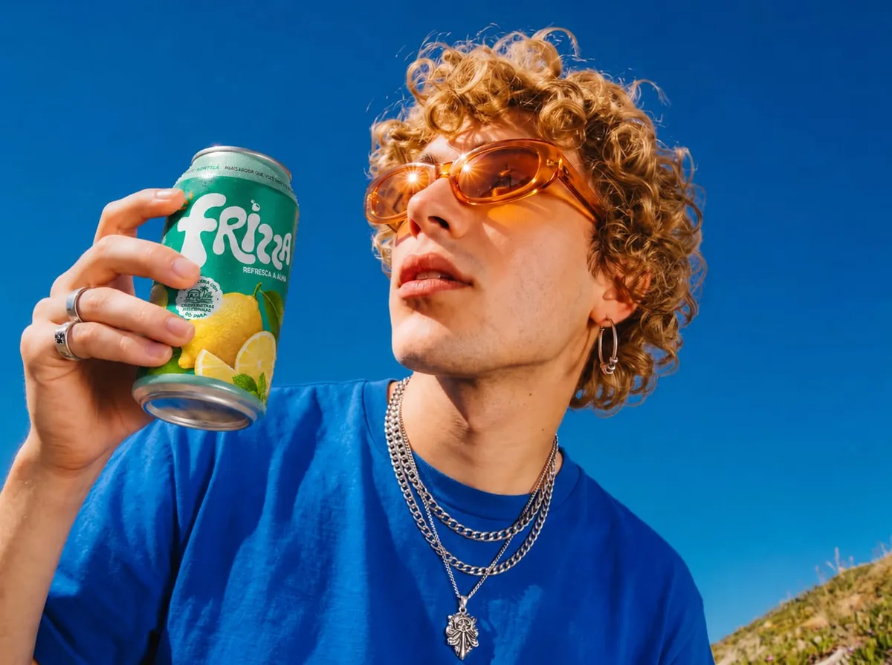
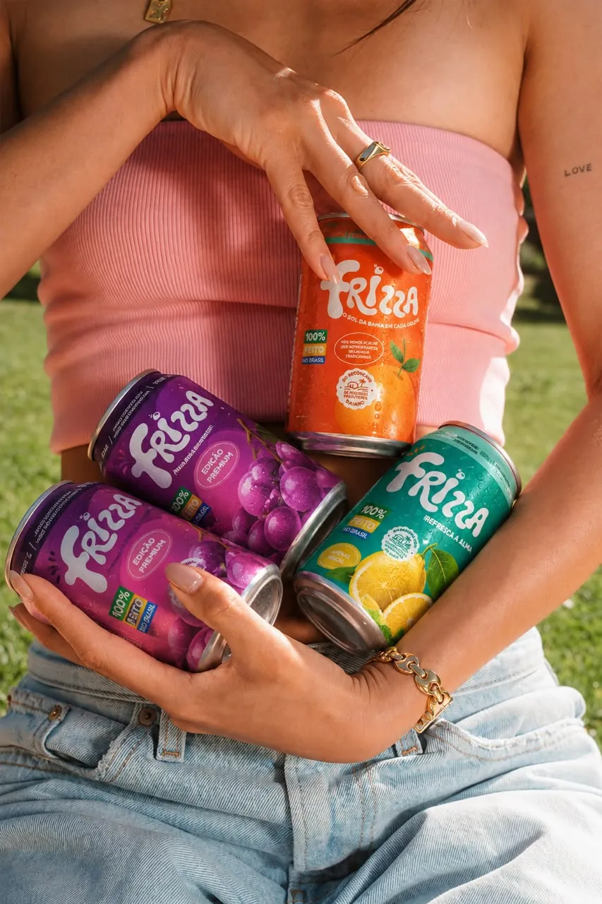
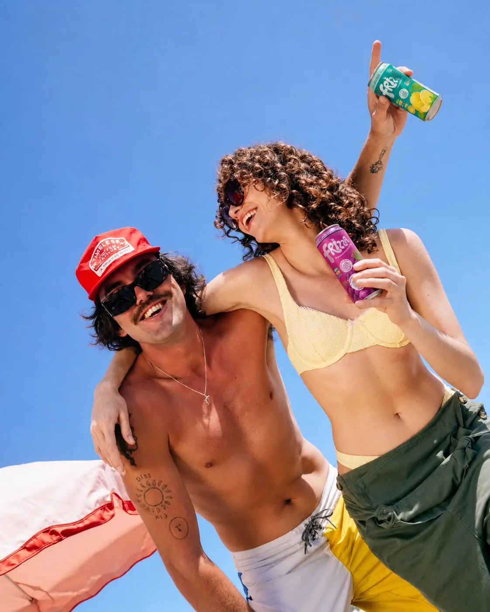
Poste sua FRIZZA com #FRIZZALOVERS e apareça aqui 📸
Seguir @frizzaoficialPor que FRIZZA
Fruta de verdade, extratos naturais e açúcar demerara orgânico. Sem corantes, aromas ou conservantes artificiais.
Até 40% menos açúcar que os refrigerantes tradicionais. Doce na medida, sem adoçante artificial.
Laranja do Recôncavo Baiano, açaí do Pará, uvas da Serra Gaúcha: 23 famílias parceiras, com preço justo.
Garrafas de vidro retornáveis, logística reversa e árvores plantadas a cada lote. Ainda tem muito a fazer, e a gente segue fazendo.
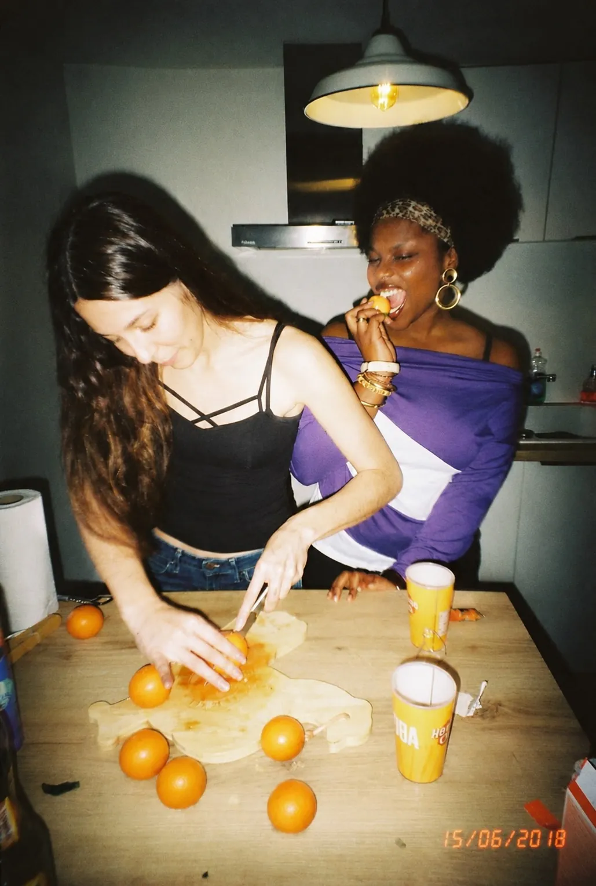
Nossa história
Por que refrigerante precisa ter gosto de laboratório? Duas amigas, jovens empreendedoras, resolveram responder na prática: fruta brasileira, pouco açúcar e muito cuidado.
Começou numa cozinha e numa feira de rua. Hoje são mais de 200 pontos de venda no Sul e Sudeste e entrega para todo o Brasil. O jeito de fazer continua o mesmo.